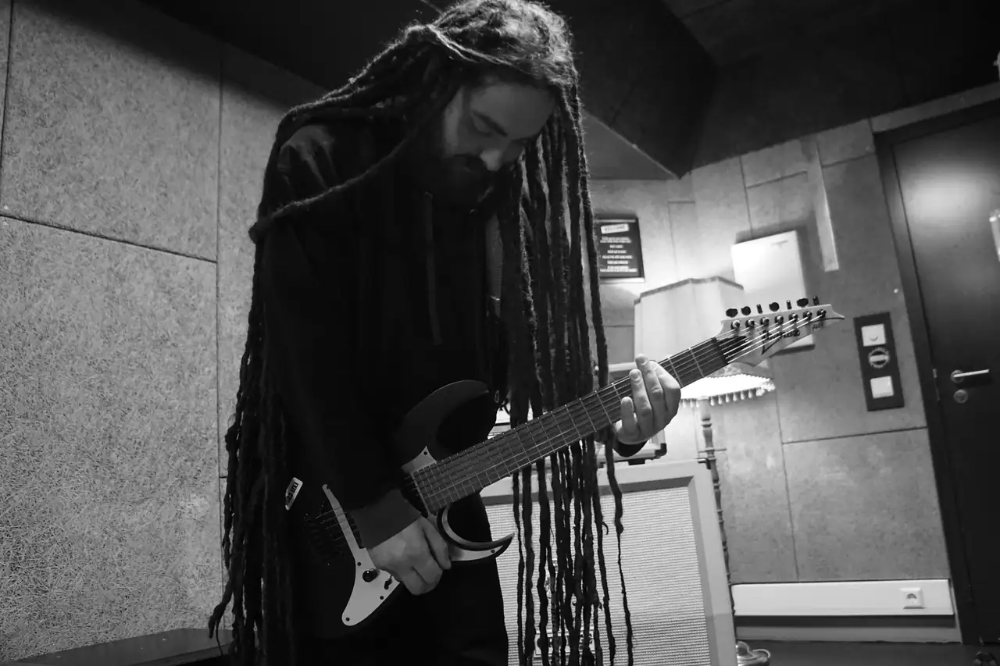
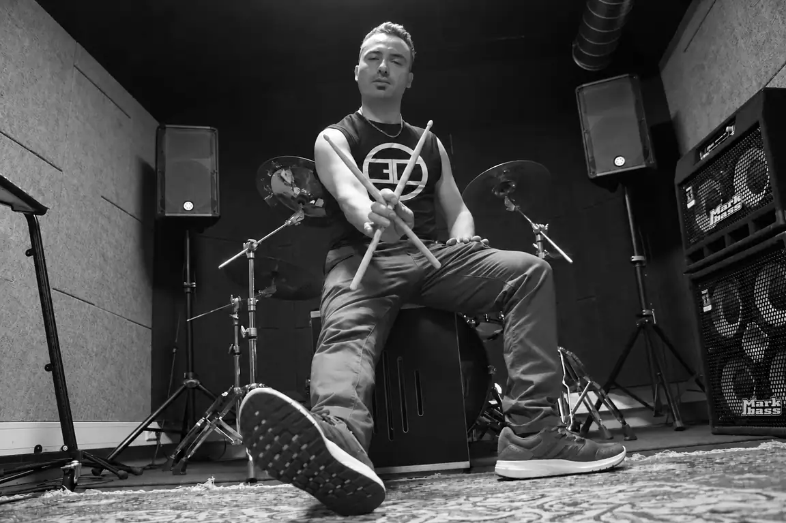
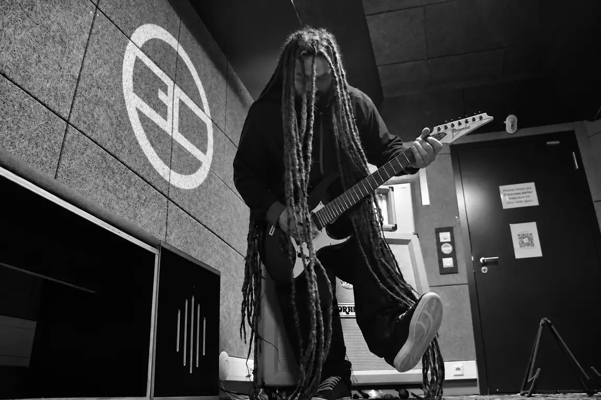
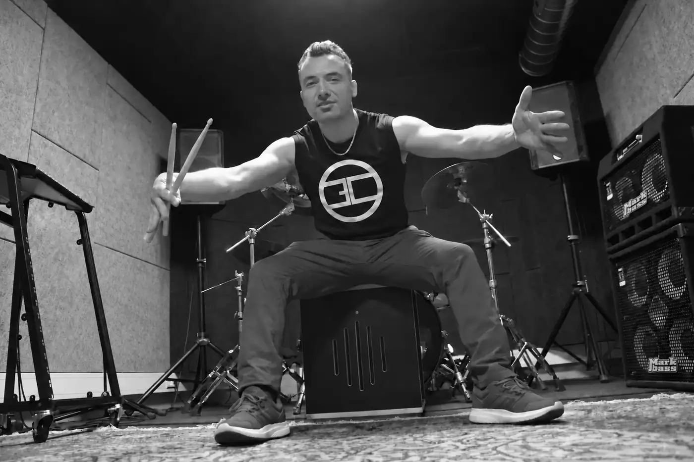
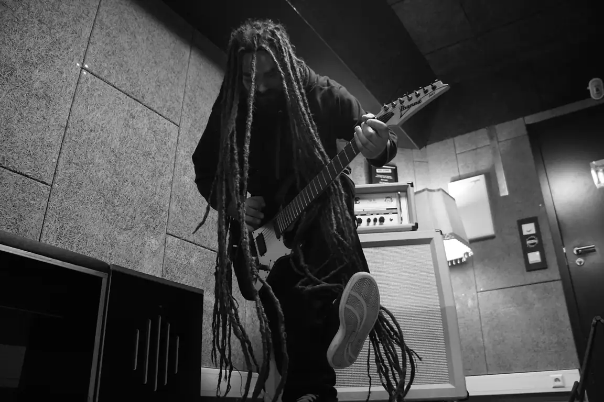

Break beyond limits.


There is always a way forward.
Berlin, Germany
Turn it up.
Let it out.
Heavy music. An open mind.
Listen to Exit Code, wherever you are.
Exit Code
Perfect
Download WAVBeyond the noise,
we find each other.
Life can be heavy. Our music makes room for that — and for what comes next. A way beyond limiting patterns. A return to ourselves, to nature, and to the strength we find together.

A shared sound.
A shared direction.
We are Adam and Joel. Exit Code is our nu metal band from Berlin, built around one belief: however hard life gets, there is always a way forward.
Our name means stepping beyond the systems and patterns that hold us back. Finding yourself. Creating something together. Respecting people, animals and the Earth we share.
AdamGuitar / Co-founder
JoelDrums / Co-founder
See you out there.
No upcoming shows announced yet.
Follow us on Facebook for concert news.
Inside our world.
A glimpse into the room where
our music takes shape.

